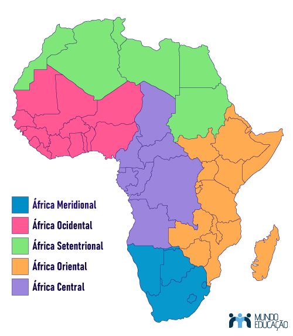
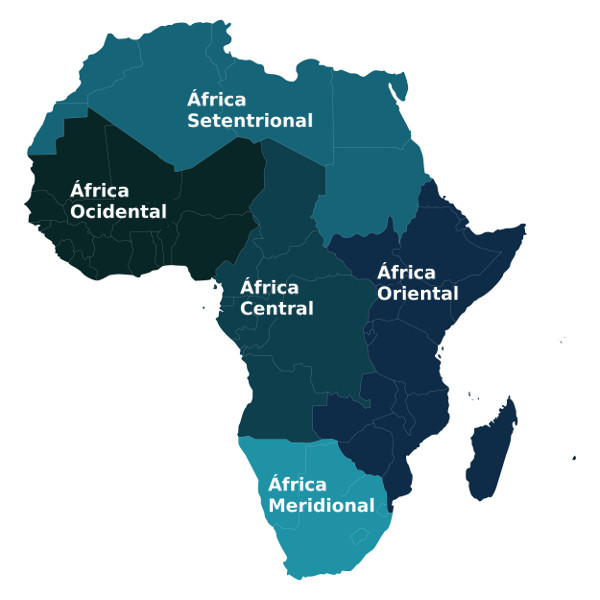

Entretanto, o continente africano apresenta grande biodiversidade, assim como uma extensa diversidade cultural,étnica,religiosa e Politíca. assim,para facilitar a análise e observação de algumas áreasNa África central encontramos países como: República Centro-Africana,República democrática do Congo,Angola,Chade,Camarões e República do congo.Na África Ocidental encontramos países como:Benin,Burquina faso,Cabo Verde,,Costa do marfim,Gabão,Gâmbia,Gana,Guiné,Guiné-bissau,Guiné-Equatorial,Libéria,Mali,Mauritânia,Níger,Nigéria,Senegal,Serra Leoa,São Tomé e princípe e Togo.Na África Meridional encontramos países como: África do Sul,Botsuana,Comores,Lesoto,Malawi,Moçambique,
Namíbia,Eswatini,Zâmbia e Zimbábue.Na África Setentrional encontramos países como:Argélia,Egito,Líbia,Marrocos,Sudão e Tunísia.Sendo a amior região do continente em áreaNa África Oriental encontramops países como:Burundi,Djibouti,Eritreia,Etiópia,Quênia,Ruanda,Madagáscar,ilhas Seychelles,Somália,Tanzânia e Uganda.